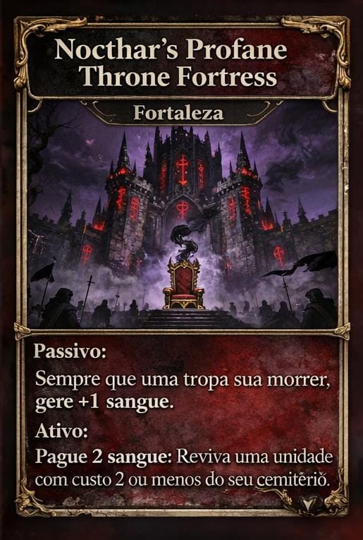
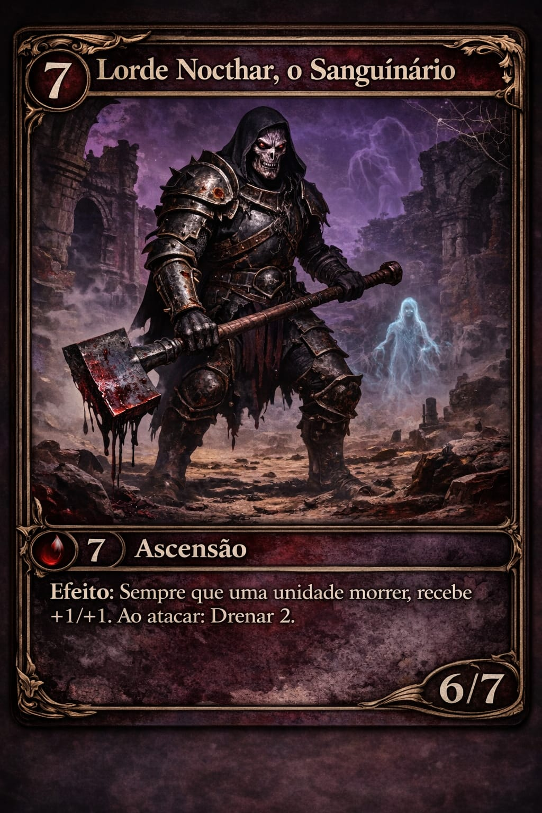
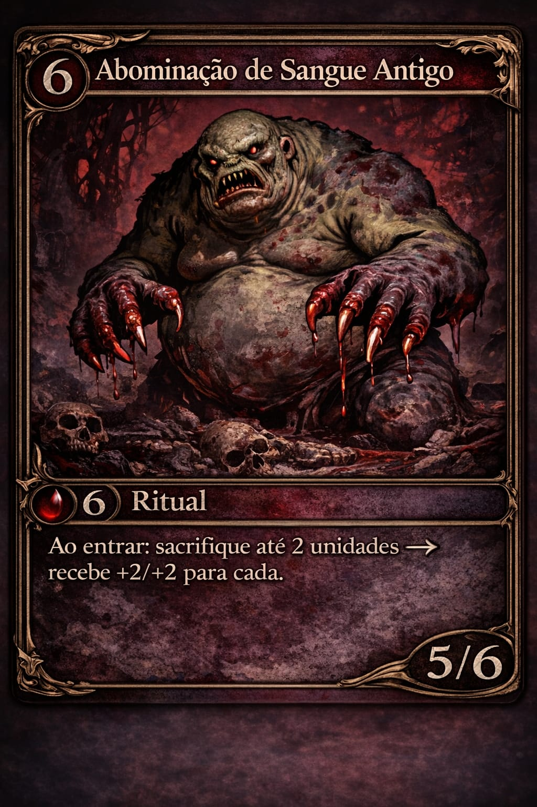

Construa seu deck, domine o fluxo de sangue e destrua seus inimigos em um mundo onde estratégia e sacrifício caminham lado a lado.

Trono Profano de Nocthar

Lorde Nocthar

Abominação de Sangue Antigo
Antes do tempo… antes da morte… antes mesmo da existência da vida… havia apenas o Vazio Primordial — um silêncio absoluto, infinito e sem forma. Mas até o vazio, em sua eternidade, começou a pulsar. Dessa pulsação nasceram os Primeiros Fluxos, entidades cósmicas além da compreensão, forças vivas que não apenas habitavam a realidade, mas a moldavam. Cada Fluxo representava um princípio fundamental — criação, destruição, ordem, caos — e entre eles surgiu algo diferente, algo que não apenas regia… mas sentia. Hem’Kalor, o Coração Rubro. Ele não era apenas uma força. Era vida em sua forma mais pura e perigosa. Dentro dele fluía o Sangue — não como substância, mas como essência absoluta da existência. O Sangue carregava memória, vontade, poder… e corrupção. Onde Hem’Kalor pulsava, formas surgiam. Onde seu poder tocava, a matéria se transformava. Ele foi o primeiro a gerar algo semelhante à vida — imperfeita, instável, mas viva. E foi exatamente isso que despertou o medo nos outros Fluxos, pois o Sangue não apenas criava… ele consumia, alterava e corrompia tudo ao seu redor. Temendo aquilo que não podiam controlar, os Fluxos se voltaram contra Hem’Kalor. A guerra que se seguiu não foi apenas um conflito — foi um colapso da própria realidade nascente. Forças além da compreensão se chocaram, rasgando o tecido do vazio. E no auge dessa guerra, Hem’Kalor foi traído, destruído e despedaçado. Mas sua morte não foi o fim. Foi o começo de tudo. Seus fragmentos, ainda pulsantes, caíram através da existência e colidiram com um mundo recém-formado, sem nome, sem propósito. No impacto, esse mundo foi transformado para sempre. Oceanos se tornaram mares escarlates, vastos e inquietos, como se ainda respirassem. A terra foi marcada por veias de sangue cristalizado que percorriam o solo como um organismo vivo. O céu assumiu tons de vermelho profundo, como uma ferida aberta no firmamento. E da união entre matéria e sangue, surgiram criaturas — algumas moldadas pela energia vital, outras deformadas pela corrupção. Assim nasceu Varn’Thalos, a Terra que Sangra. Mas a transformação não parou nas paisagens. O Sangue carregava fragmentos da consciência de Hem’Kalor, ecos de sua vontade espalhados pelo mundo. Com o passar das eras, dessas terras alteradas surgiram os primeiros povos — não criados diretamente, mas formados pela influência constante do Sangue. Em regiões onde ele fluía puro e abundante, nasceram os Hemaritas, seres que aprenderam a manipular essa força como magia. Eles ergueram templos, criaram rituais e desenvolveram impérios baseados no sacrifício e na adoração ao Coração Rubro, acreditando que Hem’Kalor não estava morto, apenas fragmentado, esperando para renascer. Nas terras mais corrompidas, onde o Sangue se misturava à decadência, surgiram os Dravkar — criaturas moldadas pela brutalidade e pela fome. Para eles, o Sangue não era algo a ser compreendido, mas consumido. Sua sociedade se baseava na força, na sobrevivência e na absorção do poder alheio, vivendo em constante conflito e evolução violenta. Já nas regiões onde a influência foi mais fraca, nasceram os Velkaris, um povo que temia o Sangue e buscava resistir à sua corrupção. Eles construíram cidades isoladas, preservaram conhecimento e passaram a estudar formas de conter ou até eliminar essa força, acreditando que Varn’Thalos era um erro deixado pela guerra dos Fluxos. Com o tempo, essas civilizações cresceram, se expandiram e inevitavelmente entraram em conflito. Guerras foram travadas não apenas por território, mas pelo controle do próprio Sangue. Impérios surgiram e caíram, rituais proibidos foram realizados, e o mundo continuou a sangrar. Pois o Sangue nunca foi apenas poder. Ele é vontade fragmentada. É memória viva. É o eco de um deus destruído. E em algum lugar, nas profundezas de Varn’Thalos, onde as veias do mundo pulsam mais fortes… os fragmentos de Hem’Kalor ainda batem. Esperando… o momento de serem reunidos novamente.
Nas eras esquecidas, quando os reinos ainda temiam a própria noite, a Casa Nocthar não buscou luz — ela a rejeitou. Diz-se que seus fundadores foram antigos sacerdotes banidos, homens que ousaram estudar aquilo que nenhum rei permitia: a morte, a alma e o que existia além. Exilados nas terras frias e silenciosas, eles encontraram poder não nos deuses… mas no fim de todas as coisas. Ali, ergueram o Trono Profano, um símbolo de domínio sobre a vida e a morte. Ao longo dos anos, Nocthar deixou de ser apenas uma casa — tornou-se um culto. Seus exércitos não temem a morte, pois a morte é apenas mais um recurso. Seus inimigos não enfrentam soldados… enfrentam aquilo que se recusa a permanecer morto. Onde outras casas lutam por honra, ouro ou glória… A Casa Nocthar luta pela eternidade.
Sacrifícios alimentam seu poder, e cada batalha fortalece sua corrupção. Onde a Nocthar pisa, a vida se torna apenas combustível para a ascensão.